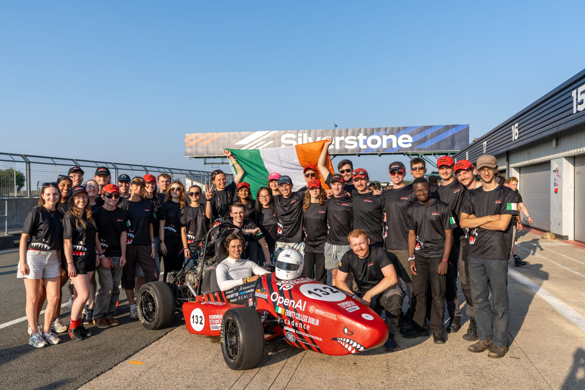
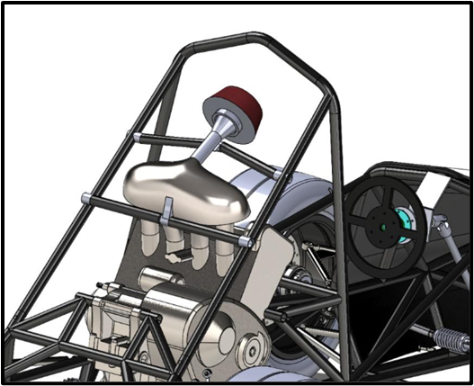
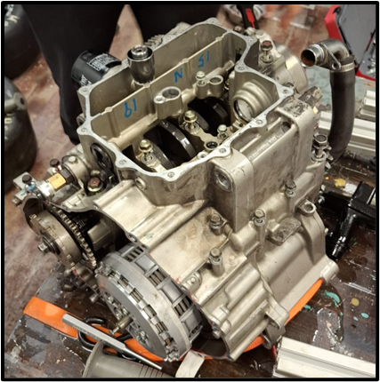
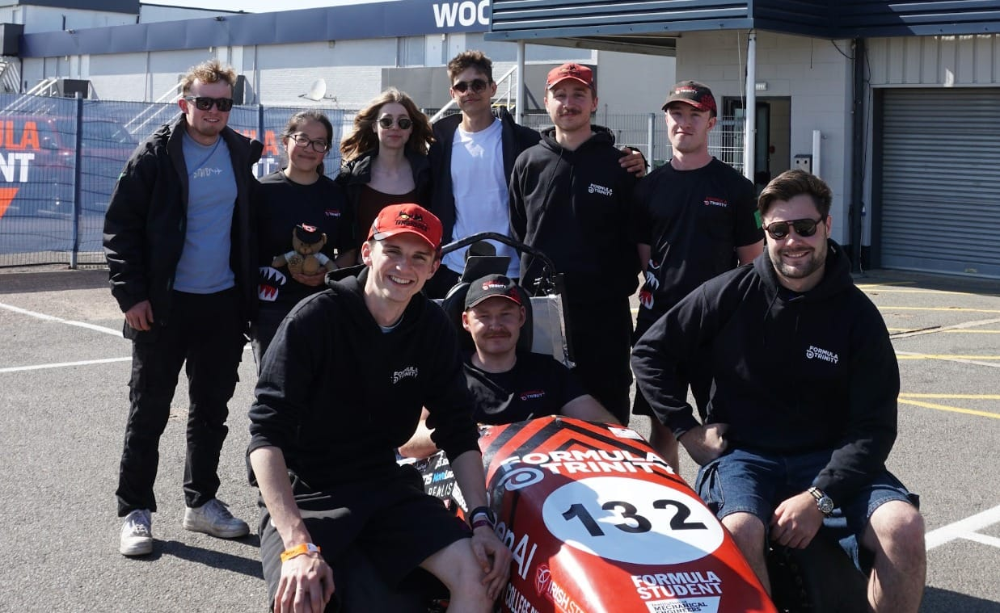
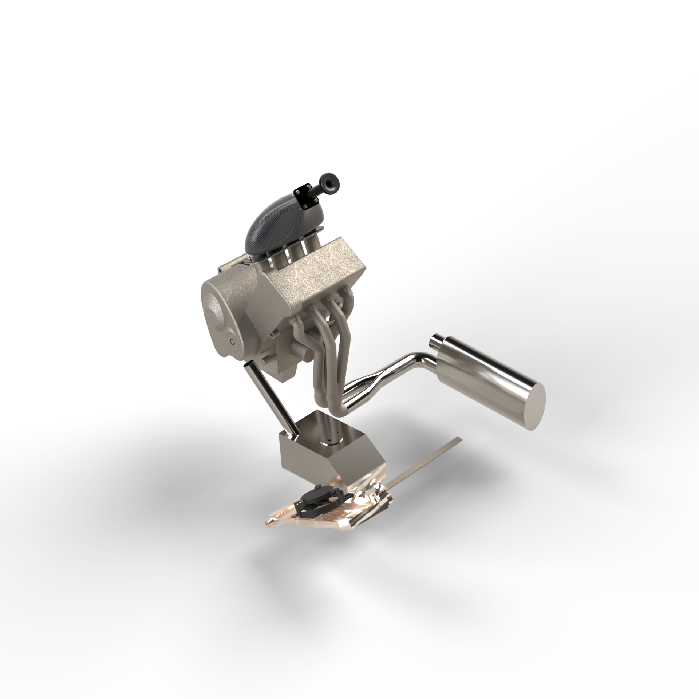
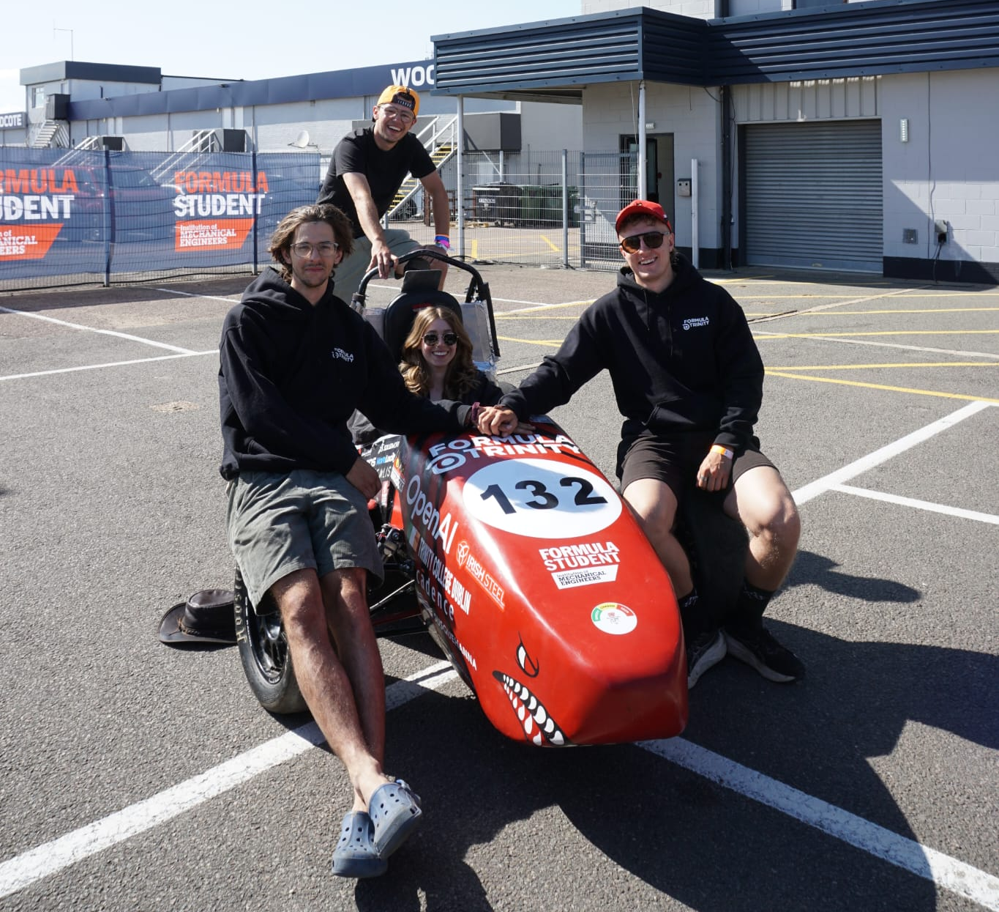
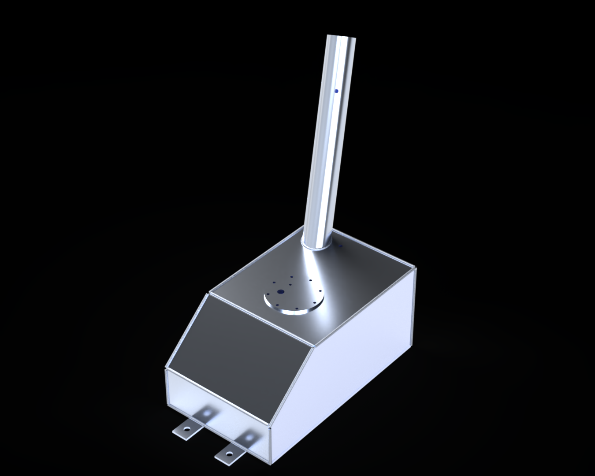

Mechanical engineering / Team leadership
2025/26 Powertrain Lead
for Formula Trinity







For the 2025/26 season, I took over as lead of the powertrain department for Formula Trinity, a Formula Student team building a single-seater internal combustion race car based around a Honda CBR600RR engine.
At the time, all other department members had graduated or left, meaning that I was in charge of rebuilding the powertrain team. I recruited 8 new members and led the design, verification and manufacturing of 5 subsystems: the intake, exhaust, muffler, fuel and cooling systems.
Within one year, I learned about all of these systems, had to figure out how to lead an 8-person team and coordinated with other departments.